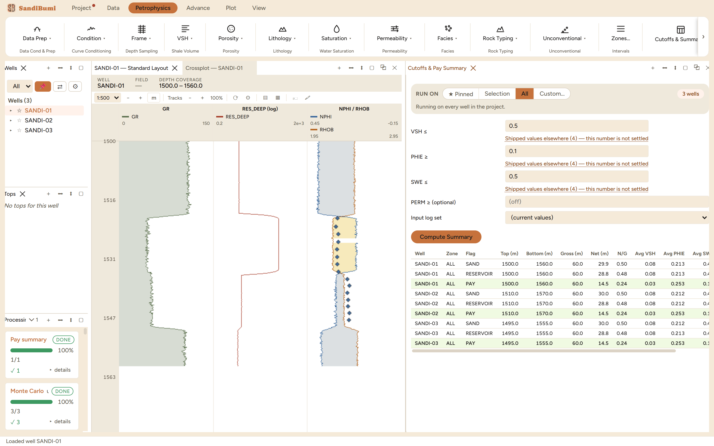

Cutoffs & Pay Summary applies the cutoff set to the interpreted
curves, writes the flag curves, and tabulates net, N/G and averages per well
and zone at three nested levels: SAND (shale cutoff only), RESERVOIR (shale
and porosity), and PAY (shale, porosity and saturation). It is the pane that
turns an interpretation into the table a report quotes, and the flags it
writes are what the composite plot, the workbook and the deck all read.
The pane

The cited cutoffs (VSH ≤ 0.5, PHIE ≥ 0.10,
SWE ≤ 0.5) applied to all three wells: SAND 29.9–30.0 m at
N/G 0.50, RESERVOIR 28.8 m, PAY 14.5 m at N/G 0.24 with PAY
rows highlighted.
Each cutoff field carries its catalogue ("Shipped values
elsewhere"; the shale cutoff's rows include a 0.5 quoted from another
product's report defaults), and no cutoff is prefilled: the number is
a study decision, recorded with the run.
PERM ≥ is optional but never ignorable: once set, a sample
with no measured permeability fails the cutoff and is flagged as
absence of evidence, not treated as exempt.
Input log set chooses which interpretation is being
summarised; the write goes through the run custody dialog because flag
curves are outputs like any other.
Step by step
Open Petrophysics ▸ Cutoffs & Summary…, set
the well scope and the three cutoffs (add permeability only if the
study uses it).
Press Compute Summary and complete the custody dialog
("Run custody"); the details travel with the flag curves.
Read the table shallow to deep: one row per well, zone and flag
level, with top, bottom, gross, net, N/G and the net-weighted
averages.
Reading the result
The three tiers answer three different questions and the example shows
why they must not be merged: half the section is sand (N/G 0.50), almost all
of that sand holds reservoir-quality porosity (28.8 m of 29.9), but
only half of the reservoir is hydrocarbon-bearing (PAY 14.5 m,
N/G 0.24, average SWE 0.16). Quoting the sand ratio where the pay ratio is
meant is a factor-of-two reserves error, which is why the flag column names
the tier on every row.
The averages are computed over the flagged intervals only: PAY
rows average PHIE 0.253 and VSH 0.03, cleaner and more porous than the SAND
rows' 0.213 and 0.08, because the saturation cutoff preferentially keeps the
best rock. The PAY HPV of 3.06 m per well is the deterministic twin of
the Monte Carlo P50 (3.00) from the same chain and cutoffs; the two panes
agreeing is a cross-check worth doing on purpose.
QC and pitfalls
Keep one cutoff set per study. The dashboard, the sensitivity
sweep and this pane all take the same three numbers; a table computed
at one set and a plot at another disagree quietly.
Check the flags on the log before quoting the table. Add the
flag curve to a layout and read where the pay actually sits; a
plausible total can still be one interval of impossible rock.
Net is not gross minus shale. A sample missing any input curve
evaluates to unknown, not to net; the Field Dashboard's Unknown column
makes that visible per well.